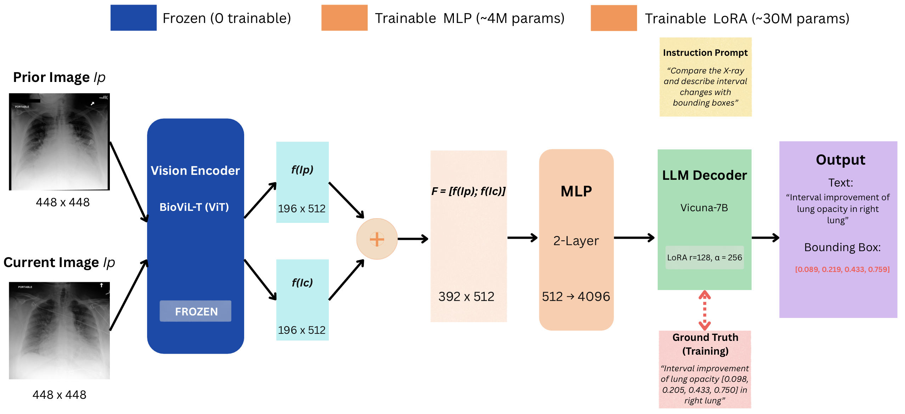
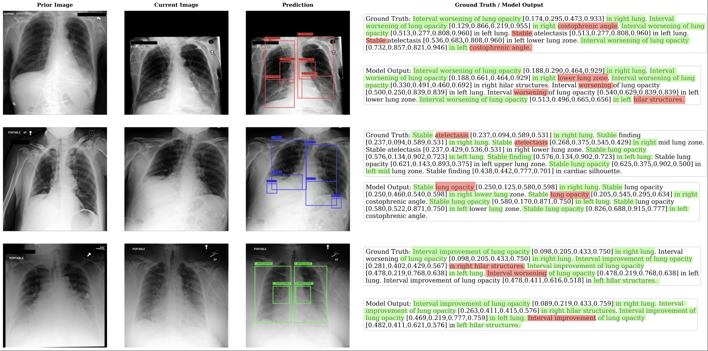

Temporal comparison of chest X-rays is fundamental to clinical radiology, enabling detection of disease progression, treatment response, and new findings. While vision-language models have advanced single-image report generation and visual grounding, no existing method combines these capabilities for temporal change detection. We introduce Temporal Radiology with Anatomical Change Explanation (TRACE), the first model that jointly performs temporal comparison, change classification, and spatial localization. Given a prior and current chest X-ray, TRACE generates natural language descriptions of interval changes (worsened, improved, stable) while grounding each finding with bounding box coordinates. TRACE demonstrates effective spatial localization with over 90% grounding accuracy, establishing a foundation for this challenging new task.
Our ablation study uncovers an emergent capability: change detection arises only when temporal comparison and spatial grounding are jointly learned. Models with access to both images but without grounding supervision fail entirely, defaulting to predicting "stable" for all samples. This suggests that grounding provides a spatial attention mechanism essential for temporal reasoning.
Example TRACE Output:

Figure: TRACE architecture for grounded temporal change detection. Given a prior and current chest X-ray, the model generates natural language descriptions of interval changes while localizing each finding with bounding box coordinates.
Takes both prior and current chest X-ray images to enable comparison of disease progression over time.
Localizes each finding with bounding box coordinates, enabling precise identification of where changes occur.
Classifies findings as worsened, improved, or stable to track disease progression and treatment response.
Generates natural language descriptions combining temporal changes with spatial localization.
TRACE performance on the test set (22,553 samples):
| Category | Metric | Value |
|---|---|---|
| NLG Metrics | BLEU-4 | 0.260 |
| METEOR | 0.438 | |
| ROUGE-L | 0.494 | |
| Clinical Efficacy | RadGraph F1 | 0.406 |
| CheXbert F1 | 0.432 | |
| Grounding | Mean IoU | 0.772 |
| IoU > 0.5 | 90.2% | |
| Change Detection | Accuracy | 48.0% |
| Method | Temporal Acc. | Grounding | Report Gen |
|---|---|---|---|
| CheXRelNet | 46.8% | ✗ | ✗ |
| CheXRelFormer | 49.3% | ✗ | ✗ |
| TRACE (Ours) | 48.0% | ✓ (90.2%) | ✓ |
TRACE achieves comparable temporal accuracy while providing two additional capabilities: spatial grounding and full natural language report generation.
| Class | Precision | Recall | F1 | Support |
|---|---|---|---|---|
| Worsening | 0.485 | 0.375 | 0.423 | 7,787 |
| Improvement | 0.382 | 0.263 | 0.311 | 4,888 |
| Stable | 0.505 | 0.674 | 0.578 | 9,878 |
| Macro Average | 0.457 | 0.437 | 0.437 | 22,553 |
| Anatomy | Accuracy | Support |
|---|---|---|
| Mediastinum | 75.5% | 339 |
| Cardiac Silhouette | 68.8% | 1,868 |
| Right Hilar | 61.7% | 60 |
| Right Lung | 45.3% | 17,343 |
| Left Lung | 44.7% | 2,549 |
Cardiac changes are substantially easier to detect than pulmonary changes, as cardiac changes involve distinct boundary shifts while pulmonary changes are often more diffuse and subtle.

Figure: Qualitative results of TRACE on three representative cases: worsening, stable, and improvement. Each row shows the prior image, current image, model prediction with bounding box overlay, and the corresponding ground truth and model output text. The model successfully identifies temporal changes and localizes the affected anatomical regions with accurate bounding box coordinates.
We conduct ablation experiments to understand the contribution of temporal input and grounding supervision:
| Model | Prior Image | Grounding | BLEU-4 | Change Accuracy |
|---|---|---|---|---|
| TRACE (Full) | ✓ | ✓ | 0.260 | 48.0% |
| Single-Image | ✗ | ✓ | 0.051 | 43.8%† |
| No-Grounding | ✓ | ✗ | 0.240 | 43.8%† |
† Predicts "stable" for all samples (0% recall on worsening/improvement)
Despite having access to both prior and current images, the no-grounding variant fails at change detection, achieving only 43.8% accuracy by predicting "stable" for all samples. This suggests that grounding supervision provides a critical inductive bias for temporal comparison. Without explicit spatial localization, the model cannot effectively compare corresponding anatomical regions across time points.
Comparison of Vicuna-7B and Mistral-7B backbones reveals distinct clinical behaviors:
| LLM Backbone | Accuracy | Worsening Recall | Improvement Recall | Stable Recall | IoU>0.5 |
|---|---|---|---|---|---|
| Vicuna-7B | 48.0% | 37.5% | 26.3% | 67.4% | 90.2% |
| Mistral-7B | 45.0% | 73.6% | 57.9% | 15.7% | 54.5% |
Clinical Implications: Vicuna-7B achieves higher accuracy through conservative prediction (high specificity, lower sensitivity), suitable for screening applications where false alarms are costly. Mistral-7B exhibits aggressive change detection (high sensitivity, lower specificity), better suited for high-risk monitoring where missing actual changes is unacceptable.
@article{aranya2025trace,
title={TRACE: Temporal Radiology with Anatomical Change Explanation for Grounded X-ray Report Generation},
author={Aranya, OFM Riaz Rahman and Desai, Kevin},
journal={arXiv preprint},
year={2025}
}
This work builds upon RaDialog, LLaVA, and BioViL-T. We use the MIMIC-CXR and Chest ImaGenome datasets.